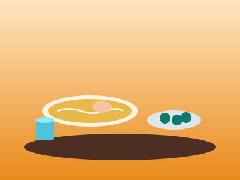
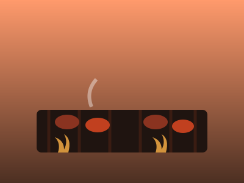
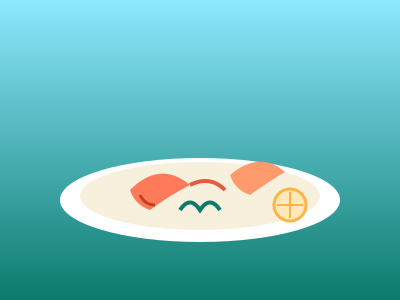

🍜 沖縄そば
豚と鰹だしの黄金スープが決め手 那覇
那覇
国際通り周辺
国際通りの老舗そば店
豚骨と鰹節を効かせた透き通るスープに、コシのある自家製麺。三枚肉とソーキがのった一杯は観光の合間のランチに最適。
三枚肉そばソーキそばランチ向き

那覇
牧志・公設市場周辺
市場発の島だしそば
大東島由来のコシの強い麺や、宮古そば系のあっさり出汁など個性豊かな一杯が食べ比べできるのも国際通りエリアの魅力。
島そば食べ比べ行列店あり
🍻 居酒屋・せんべろ
泡盛と島料理で乾杯 那覇
那覇
牧志公設市場周辺
公設市場アーケードの立ち飲み横丁
ミミガー、島豆腐、ラフテーなど沖縄の家庭料理を肴に、地元の泡盛で乾杯。1,000〜2,000円台で楽しめる「せんべろ」スポットが密集。
泡盛島料理1人飲みOK
北谷
アメリカンビレッジ周辺
北谷の海沿い居酒屋
サンセットビーチを眺めながら泡盛とアグー豚料理を楽しめる開放的な居酒屋が集まるエリア。観光客同士の相席も盛り上がる。
アグー豚海沿い夜景
🥩 ステーキ・焼肉
米軍統治時代から続く沖縄ステーキ文化 那覇
那覇
国際通り・松山エリア
国際通りの老舗ステーキハウス
鉄板でジュージューと運ばれてくるライブ感が名物。あぐー豚や県産牛を使ったボリューム満点のステーキが深夜まで楽しめる。
あぐー豚深夜営業観光客に人気

北谷
アメリカンビレッジ周辺
北谷のアメリカンステーキ&BBQ
本場アメリカンスタイルのボリュームステーキが味わえる店が多く、基地の街らしい異国情緒とともに楽しめる。
大盛りアメリカンファミリー向け
🍽️ リゾートダイニング
海を望む特別な一皿 恩納村
恩納村
恩納村・読谷村
オーシャンビューのコースレストラン
本部牛や宜野座産の車海老など沖縄食材をふんだんに使った創作コース料理を、海沿いのテラス席で。サンセットタイムの予約が特に人気。
コース料理記念日要予約

恩納村
恩納村リゾートホテル街
ホテル併設のシーフードダイニング
県産車海老やもずくなど地元食材を活かした一皿と、大きな窓から望むエメラルドグリーンの海。特別な日のディナーにおすすめ。
シーフードホテルダイニング眺望抜群
🌺 カフェ・スイーツ
タコライスからぜんざいまで 恩納村
恩納村
恩納村・読谷村
オムタコ&沖縄ぜんざいカフェ
ふわとろ卵で包んだ沖縄式タコライス「オムタコ」や、ふわふわ氷に金時豆をのせた沖縄ぜんざいが人気の海沿いカフェ。
タコライス氷ぜんざいテラス席
 北谷
北谷
アメリカンビレッジ周辺
タコス&バーガー専門店
米軍基地の街として発展した北谷ならではの本格タコスやハンバーガー。サンセットを見ながらのテラス席が特に人気。
タコスバーガーサンセット
🥢 市場めし・屋台
その場で味わう沖縄の食文化那覇
第一牧志公設市場2階
公設市場の「持ち上げ」食堂
1階で選んだグルクンやイラブチャーなどの鮮魚を、2階の食堂で刺身・唐揚げ・バター焼きなど好みの調理法にしてもらえる名物体験。
鮮魚体験型持ち上げ料+調理代